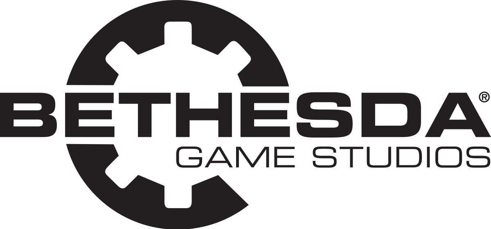

|  | Bethesda y Sus Franquicias |
|---|
¿Quiénes son Bethesda?Desde hace dos décadas, Bethesda Softworks ha sido una compañía desarrolladora y distribuidora de contenidos para el entretenimiento interactivo, principalmente videojuegos para consolas y ordenadores. Fue fundada en 1986 por Christopher Weaver en Bethesda (Maryland), y su sede fue posteriormente desplazada a Rockville (Maryland) en 1990. En 1999, Weaver, junto con su socio Robert A. Altman, fundó ZeniMax Media, quedando Bethesda como filial de dicha empresa Es conocida por sus videojuegos de simulación deportiva, de acción y de rol. Algunos de sus trabajos más conocidos son los videojuegos de la serie The Elder Scrolls, además de otros como DOOM, Fallout y Wolfenstein. Bethesda fue reconocida desde su creación por el desarrollo del primer videojuego de deportes basado en un motor de físicas, Gridiron!, en 1986 para Atari ST, Commodore Amiga y Commodore 64/128. Sus primeros trabajos fueron bien recibidos por parte de la prensa especializada; por ejemplo, en diversos análisis del videojuego Wayne Gretzky Hockey, se le cataloga como «un juego excelente» o, en el caso del análisis de Amiga Computing, «la simulación deportiva más precisa y divertida que he tenido el placer de jugar». La empresa es muy conocida por crear la serie de videojuegos de rol The Elder Scrolls, en base al trabajo original de Julian Lefay. El primer capítulo de la serie, denominado The Elder Scrolls: Arena, fue lanzado en 1994. A partir de ese momento, gracias al éxito cosechado, se publicaron numerosos videojuegos relacionados. Las secuelas directas, Daggerfall, Morrowind, Oblivion, y Skyrim fueron publicadas en 1996, 2002, 2006 y 2011, respectivamente. Además, la serie ha tenido varios spin-offs relacionados: An Elder Scrolls Legend: Battlespire en 1997, The Elder Scrolls Adventures: Redguard en 1998 y The Elder Scrolls Travels: Shadowkey en 2004. El estudio también es conocido por publicar títulos basados en franquicias populares de películas, como The Terminator, Star Trek, Piratas del Caribe o Mad Max. En 2004, Bethesda Softworks adquirió la serie de videojuegos de rol Fallout, propiedad hasta el momento de Interplay Productions, traspasando el desarrollo de Fallout 3 al estudio interno Bethesda Game Studios. El videojuego fue finalmente lanzado el 28 de octubre de 2008. Al año siguiente desde su lanzamiento, fueron publicadas cinco expansiones de contenido para dicho videojuego: Operation: Anchorage, The Pitt, Broken Steel, Point Lookout, y Mothership Zeta. El 24 de junio de 2009, ZeniMax Media, empresa matriz de Bethesda, adquirió el estudio de desarrollo id Software, cuyos títulos, incluyendo Rage, serían publicados por Bethesda Softworks a partir de ese momento. |
FalloutLa serie Fallout comenzó en 1997 con los juegos de rol en perspectiva isométrica para PC desarrollados por Black Isle Studios e Interplay Entertainment. Tras un largo periodo de ausencia, Bethesda Game Studios, creadores de The Elder Scrolls, se hicieron con los derechos de esta anacronía posnuclear ambientada en Estados Unidos. En 2008 publicaron Fallout 3, que renovó la serie como un RPG de acción, una fórmula con la que se han publicado varias entregas. También hay juegos derivados o spin-offs de otros géneros, como la gestión de Fallout Shelter y la acción de Fallout: Brotherhood of Steel, e incluso series de televisión. |
Doom
La franquicia Doom (estilizada DooM o DOOM) es una serie de videojuegos de disparos en primera persona desarrollados por id Software. Esta franquicia incluye novelas, cómics, juegos de mesa y adaptaciones cinematográficas. La serie se centra en las hazañas de un marine espacial no identificado que opera bajo las órdenes de la Union Aerospace Corporation (UAC), que lucha contra hordas de demonios y no muertos en el inframundo y la Tierra, protagonizando diversos viajes por portales entre ambos mundos. |